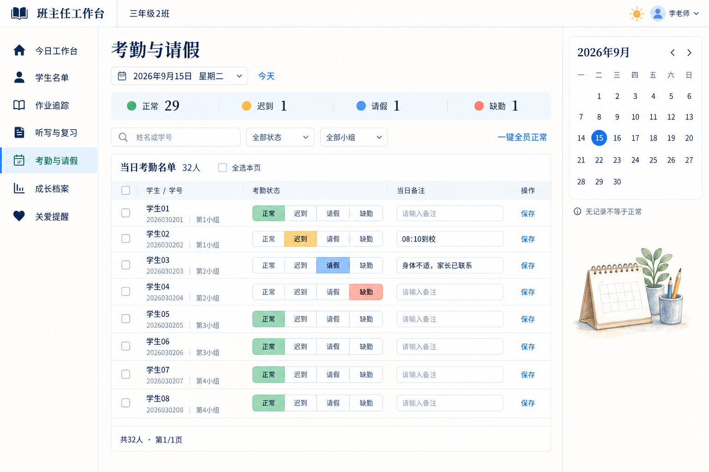
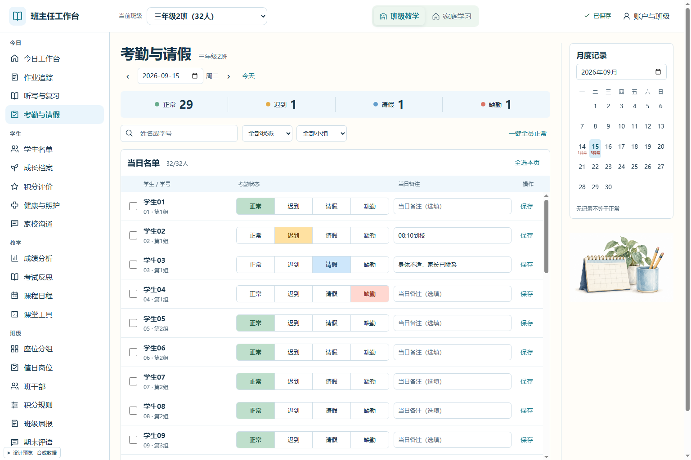
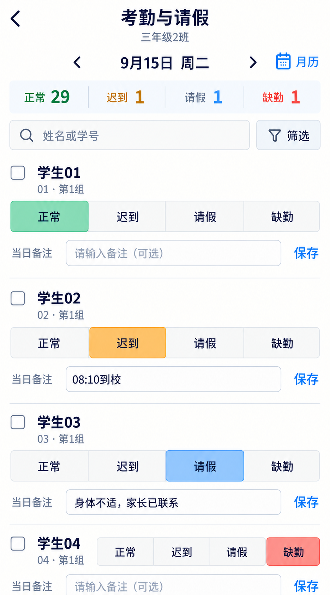
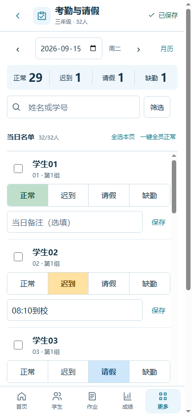
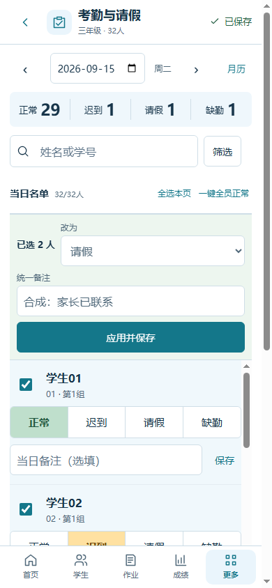
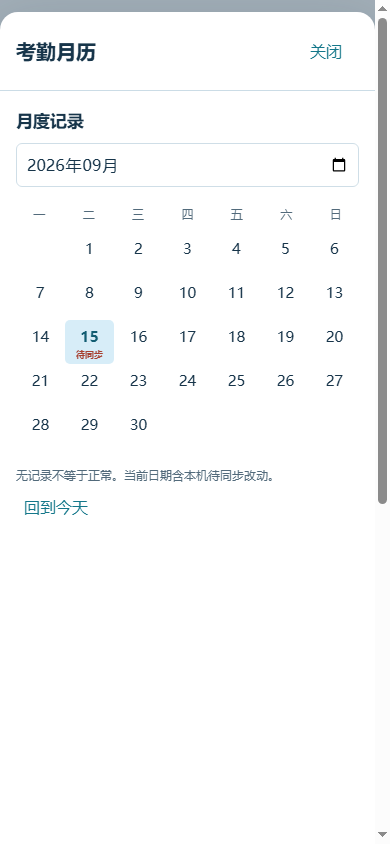

源码d7450bb；可运行隔离稿，合成数据、内存模拟保存。C01方向已确认；本稿D/R尚未批准。
打开可运行稿 · 启动与状态说明 · 独立复核 · 版本、截图与检查记录
复用真实共享导航与字体，使用独立水彩素材，名单内部滚动保留全体学生。两种版本不混作同一图。


候选935×1683保持原比例；实图390×844。每人四态独立行，工具补齐；今天在月历内。壳层、字号与首屏容量差异请按实图审看。




36张主状态、8张窄屏、6张完整滚动图见record。44项交互通过；独立复核三项问题已关闭。qa:strict旧运行器仍异常，不称全站通过。未验证真实手机软键盘/跨设备保存；小月历附注可读性保留观察。听写继续暂缓，未接正式业务、未部署。